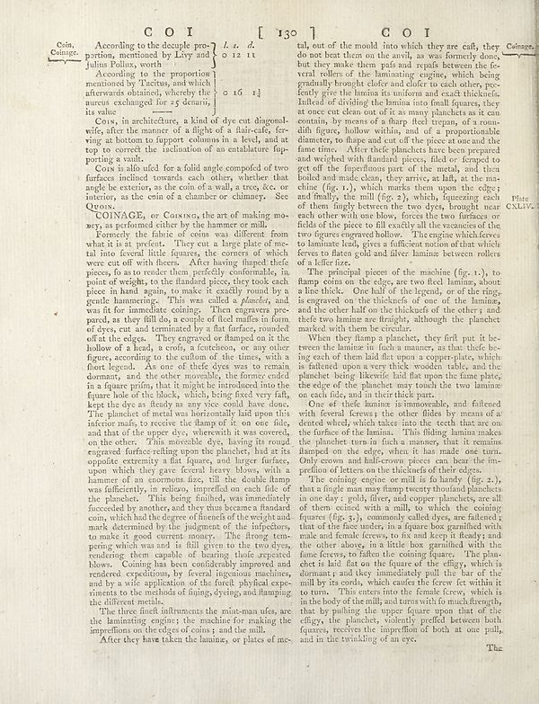

Scan ID britannica:309f765b1ecc83e0a7f7762e44b4a927a7555443:train:1250
Image SHA-256 2e0c75f854185185ace0f165eea2b904222208282d93a1c66b97c9b5c42f5c95
Status: ok. Running header: COI I 130 | COI (catchword). Removed page furniture: Page-header: COI I 130 | COI, Page-footer: Thu.
PDF · raw Parse reply · LaTeX

| # | Class | Box | Parse 3.5 | Used text | Source |
|---|---|---|---|---|---|
| 1 | Text | [0.0879, 0.0563, 0.4854, 0.0969] | Coin, According to the decouple pre- portion, mentioned by Livy and Julius Pollox, worth | Coin, Coinage. According to the decuple pro- portion, mentioned by Livy and Julius Pollux, worth | super_vl |
| 2 | Text | [0.1631, 0.0984, 0.3926, 0.1656] | According to the proportion mentioned by Hectus, and which afterwards obtained, whereby the aurer exchanged for _5_ denarii its value | According to the proportion mentioned by Tacitus, and which afterwards obtained, whereby the aureus exchanged for 25 denarii, its value | super_vl |
| 3 | Text | [0.1514, 0.1664, 0.5361, 0.2367] | Coin, in architecture, a kind of are cut diagonal, wife, after the manner of a flight of a fluid-cafe, fering in bottom to support columns in a level, and at top to correct the inclination of an entalature fuip- putting a room. | Coin, in architecture, a kind of dye cut diagonally, after the manner of a flight of a stair-case, serving at bottom to support columns in a level, and at top to correct the inclination of an entablature supporting a vault. | super_vl |
| 4 | Text | [0.1523, 0.2359, 0.5371, 0.3008] | Coin is allo uled for a field angle compofol of two surfaces inclined towards each other, whether that angle be exterior, as the coin of a wall, a tree, fcc or interior, as the coin of a chamber or chimary. See Qouo. | COIN is also used for a solid angle composed of two surfaces inclined towards each other, whether that angle be exterior, as the coin of a wall, a tree, &c. or interior, as the coin of a chamber or chimney. See Quoin. | super_vl |
| 5 | Text | [0.1602, 0.3016, 0.5381, 0.3273] | COINAGE, or Coining, the art of making ma-ery, as performed either by the hammer or mill. | COINAGE, or Coining, the art of making money, as performed either by the hammer or mill. | super_vl |
| 6 | Text | [0.1543, 0.3281, 0.5391, 0.8609] | Remedy the fabric of coins was different from what it is not present. They cut a large piece of metal into federal little figures, the corners of which were cut with shellsers. After having flapped thefele pieces, fo an are reader than perfectly comfortable, point of weight, to the flandard piece, they took each piece in hand again, to make it seemed young people gentle hummering. This was called _Adenez_, and was fit for immediate coming. Then engravers pre-panda, if they fill do, a couple of fleer fits in form of dyes, cut and terminated by flat surface, rounded off at the edges. They engrav | Formerly the fabric of coins was different from what it is at present. They cut a large plate of metal into several little squares, the corners of which were cut off with shears. After having shaped these pieces, so as to render them perfectly conformable, in point of weight, to the standard piece, they took each piece in hand again, to make it exactly round by a gentle hammering. This was called a planchet, and was fit for immediate coining. Then engravers prepared, as they still do, a couple of steel mauls in form of dies, cut and terminated by a flat surface, rounded off at the edges. They | super_vl |
| 7 | Text | [0.1592, 0.8602, 0.54, 0.8992] | The three finest influences the white-man ufes, are the laminating engines: the machine for making the imperfections on the edges of coins, and that null. | The three finest instruments the mint-man ufes, are the laminating engine; the machine for making the impreffions on the edges of coins ; and the mill. | super_vl |
| 8 | Text | [0.1875, 0.8984, 0.541, 0.9164] | After they have taken the laminae, or plates of me- | After they have taken the laminae, or plates of me- | super_vl |
| 9 | Text | [0.5439, 0.0555, 0.9297, 0.3773] | tal, out of the mould into which they are cafts, they do not best them on the avril, as was formerly done, but they make them pals and repuls between the fe- veral rollers of the laminating engine, which being gradually brought before and defer to the other pro- fently give the lamina its uniform and exact thickensful. Indeed of dividing the lamina can final figures, they at once even clean out of it as many plantaches as it can contain, by means of a sharp fleet trepan, of a roun- dill figure, hollow within, and of a properizationable diameter, to shape and cut of the pieces at one unit the f | tal, out of the mould into which they are cast, they do not beat them on the anvil, as was formerly done, but they make them pas and repass between the several rollers of the laminating engine, which being gradually brought closer and closer to each other, frequently give the lamina its uniform and exact thickness. Instead of dividing the lamina into small squares, they at once cut clean out of it as many planchets as it can contain, by means of a sharp steel trepan, of a roundish figure, hollow within, and of a proportionable diameter, to shape and cut off the piece at one and the same time. | super_vl |
| 10 | Text | [0.5459, 0.3789, 0.9307, 0.4727] | The principal pieces of the machine (fig. x.), to damp coins on the edges, are two fiecl laminae, about a fine thick. One half of the legends, of the ring, is engraved on the thickness of one of the laminain, and the other half on the thickelsof the other; and their two laminar and freightly, although the phanchet marked with them he circular. | The principal pieces of the machine (fig. 1.), to stamp coins on the edge, are two steel laminae, about a line thick. One half of the legend, or of the ring, is engraved on the thickness of one of the laminae, and the other half on the thickness of the other; and these two laminae are straight, although the planchet marked with them be circular. | super_vl |
| 11 | Text | [0.5469, 0.4734, 0.9316, 0.5672] | When they flump a planches, they fril put it be- borne the flavor in flakes as manas, as that the foils- ing cell of them laid flat upon a scrapeplate, which is faltered upon a every thick wooden table, and the phanche being likewise, laid as the tape of the phanchet may take the time liman or each ride, and in their thick part. | When they stamp a planchet, they first put it between the laminæ in such a manner, as that the being each of them laid flat upon a copper-plate, which is fastened upon a very thick wooden table, and the planchet being likewise laid flat upon the same plate, the edge of the planchet may touch the two laminæ on each side, and in their thick part. | super_vl |
| 12 | Text | [0.5479, 0.5664, 0.9326, 0.675] | One of the fine lamina isimmorable, and faltered the fewralferesys the other lides by menas of a dented wheel, which takes into the teeth that are on the furties of the laminain. This fitting lamin makes the phanchet runs in flash a mansmy that it remains damaged on the edge, when it has made one turn. Only crown and half-croony pieces can lay the im- prefinion of letters on the thickets of their edges. | One of these laminae is immoveable, and fastened with several screws; the other slides by means of a dented wheel, which takes into the teeth that are on the surface of the lamina. This sliding lamina makes the planchet turn in such a manner, that it remains stamped on the edge, when it has made one turn. Only crown and half-crown pieces can bear the impression of letters on the thickness of their edges. | super_vl |
| 13 | Text | [0.5488, 0.6742, 0.9336, 0.9156] | The cooling engine or mill is for handy (fig. z.), tuna a fragile man may many twenty thousand plants in one day; golg filters and copper planchets, are all of them cooked with a milk, which the coating liquures (fig. z.), commonly called dyes, are flattened; that of the face under, in a figure box garnified with male and female flowers, to fix and keep it flexily and the other above, in a little box garnished with the fame foresew, to fatten the coming liquare. The plan- chet is laid flat on the liquure of the digty, which is manam; and theý immediately pull the bar of the mill by its cords, | The coining engine or mill is so handy (fig. 2.), that a single man may stamp twenty thousand planchets in one day: gold, silver, and copper planchets, are all of them coined with a mill, to which the coining squares (fig. 3.), commonly called dyes, are fastened; that of the face under, in a square box garnished with male and female screws, to fix and keep it steady; and the other above, in a little box garnished with the same screws, to fasten the coining square. The planchet is laid flat on the square of the effigy, which is dormant; and they immediately pull the bar of the mill by its cords | super_vl |
Britannica scans: National Library of Scotland, CC0 1.0. Wikipedia text: Wikipedia contributors, CC BY-SA 4.0, revision links on each page. Generated 2026-10-18T13:26:14+00:00.